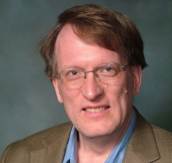

Prof. Henning Schulzrinne received degrees from Darmstadt (Germany) University of Technology, the University of Cincinnati and the University of Massachusetts in Amherst. He has held research positions at GMD Fokus, Berlin and Bell Laboratories before joining the faculty of Columbia University, New York. From 2004 until 2009, he chaired the Department of Computer Science and is now Julian Clarence Levi Professor of Computer Science. From 2010, he has also served as an Engineering Fellow at the U.S. Federal Communications Commission (FCC). His research interests encompass real-time network services, ubiquitous and mobile computing and network reliability. He is a co-author of more than 50 RFCs, including RTP, RTSP, SIP and GIST.